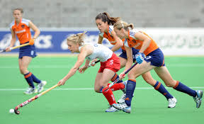
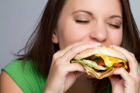
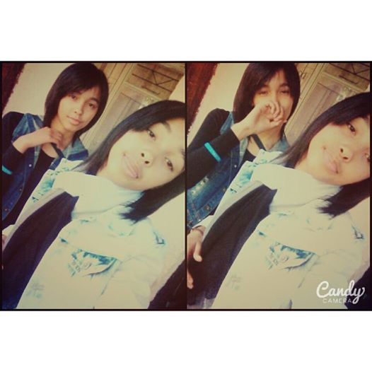

Personal Details
Interests & Hobbies
- Hockey 
- Reading
- Eating 
- Coding

Achievements💝
Where i see myself in 5 years
One day i want to make a differents in this world which we live in. I want to light up a down day and most impotantly i want to make people smile. One day I believe I'm going to be different by doing what I do best #Coding.
Basic Information
- School:Cloetesville High
- Grade:10B
- Gender:Female
My Main Subjects
Contact Details
- Email:amberjacobs04@gmail.com
About me
I'm a very shy girl,but I'm a hardworker. I like to share with people. Once you get to know me you probably never forget me. I'm also a twin #lookalike Amy Jacobs she was also part of this awesome program. #GirlsWhoCanCode! 